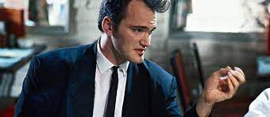

Quentin Jerome Tarantino – amerykański reżyser, scenarzysta i aktor filmowy, sporadycznie także producent, jeden z głównych przedstawicieli postmodernizmu filmowego. Jest członkiem Amerykańskiej Akademii Sztuk i Nauk. Karierę rozpoczął jako twórca scenariuszy do filmów Urodzeni mordercy i Prawdziwy romans. Gdy w 1992 roku na ekrany wszedł film "Wściekłe psy", wyreżyserowany przez nikomu nieznanego debiutanta Quentina Tarantino, krytycy chórem krzyknęli, że oto mamy do czynienia z narodzinami prawdziwego talentu. Kiedy dwa lata później powstał obraz pt. "Pulp Fiction", zachwyt przeszedł wszelkie granice. Film zdobył Złotą Palmę w Cannes, Oscara za scenariusz i został okrzyknięty, podobnie jak jego twórca, kultowym. Tygodnik "Variety" twierdził, że Tarantino jest pierwszym z nowej generacji reżyserów - artystów, którzy swojego fachu będą uczyli się nie w szkołach, ale oglądając film na wideo. Powoływali się na fakt, iż Quentin, będąc maniakiem kina, pięć lat przepracował w wypożyczalni kaset, gdzie miał łatwy dostęp do filmów i mógł je oglądać też w godzinach pracy. Codziennie pochłaniał po kilka obrazów, od niskobudżetowych produkcji rodem z Hongkongu po dzieła francuskiej "nowej fali". Była to jego szkoła filmowa. Realizacją "Wściekłych psów" udało mu się zainteresować Harveya Keitela, który nie dość, że zwiększył budżet filmu z 35 tysięcy dolarów do 1,5 miliona, to jeszcze przekonał do zagrania w nim takich aktorów jak Tim Roth czy Michael Madsen. Obecnie Quentin Tarantino jest prawdopodobnie jednym z najchętniej oglądanych i najczęściej dyskutowanych reżyserów naszych czasów. Przez wielu krytyków przedstawiany jest jako wzorowy przykład twórcy postmodernistycznego.
